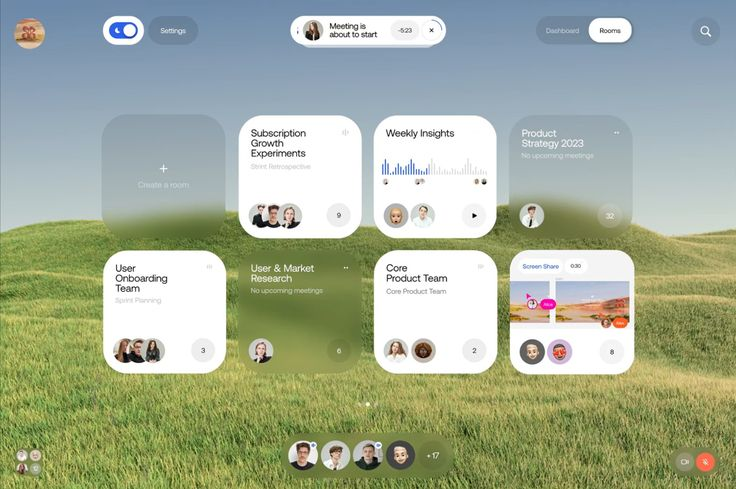
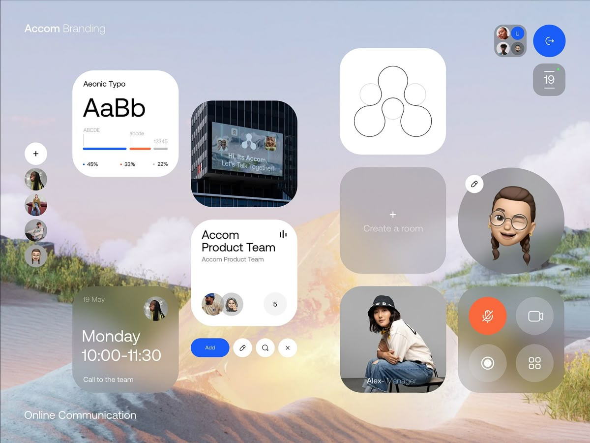
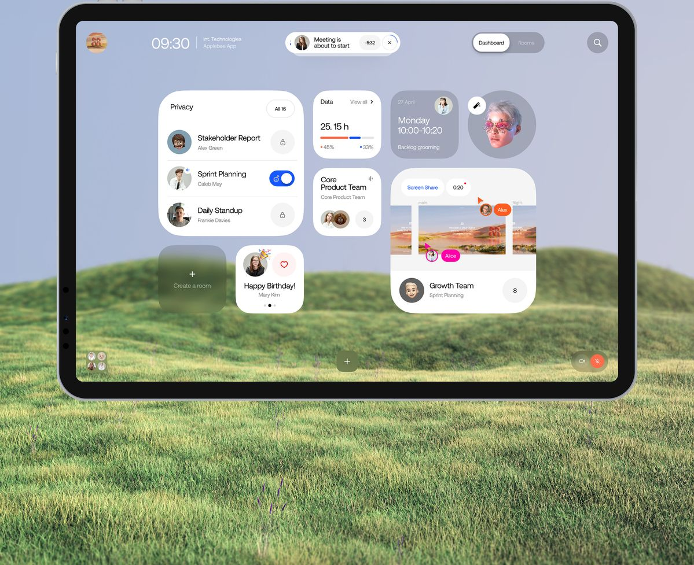
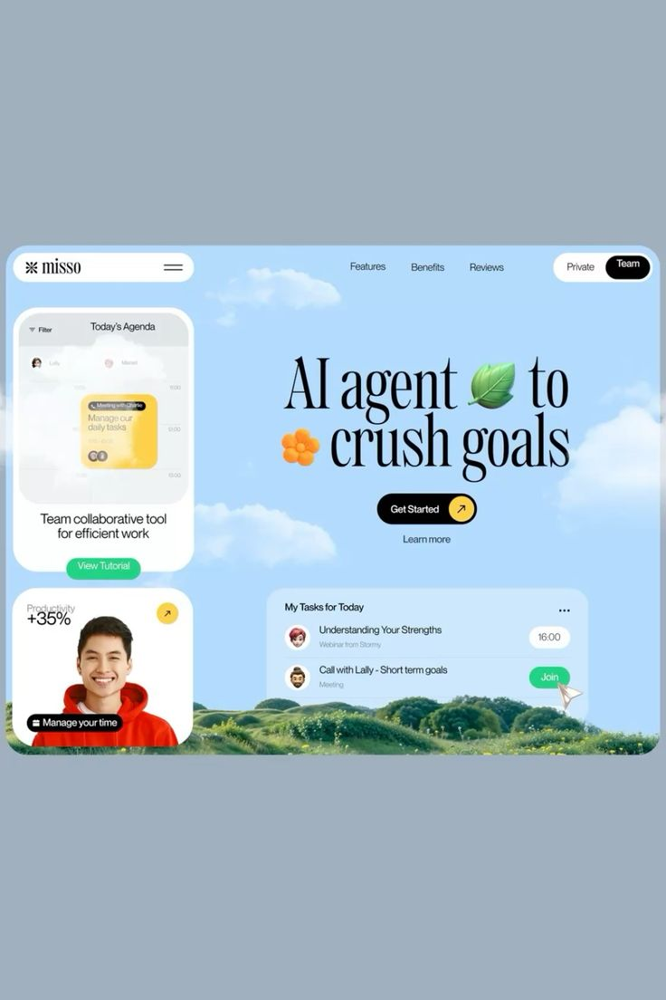

Визуальные ориентиры · 2026
Дом. Мудборд
Четыре изображения из разговора. Сохраняем настроение и принципы, создаём собственный интерфейс.

01 · Воздух
Открытое пространство, паузы между объектами, спокойный вход в день.

02 · Масштаб
Крупные карточки и типографика, мягкая глубина, свободная композиция.

03 · Личный набор
В центре — контекст человека; верхняя строка лишь помогает ориентироваться.

04 · Настроение
Тёплый свет и мягкие цвета. Берём атмосферу, не структуру промостраницы.
Много воздухаНе заполнять каждый пиксель и не показывать сразу все возможности.
Крупно и ясноЧитаемая типографика, большие действия, никаких микроподписей.
Стекло с меройМягкая прозрачность поддерживает глубину, но не снижает контраст.
Живой покойАнимация объясняет переходы; фон и интерфейс не соревнуются за внимание.